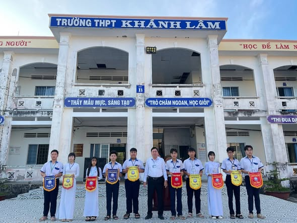
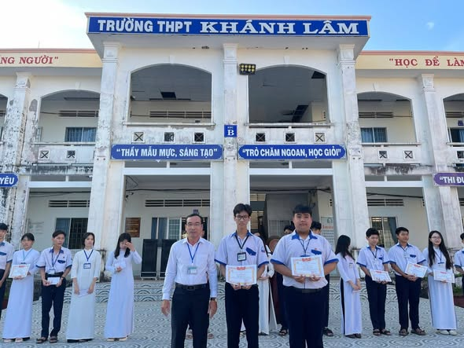
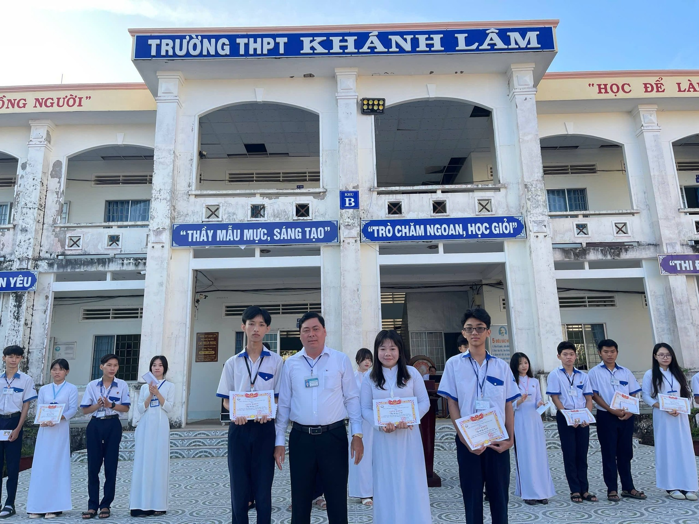
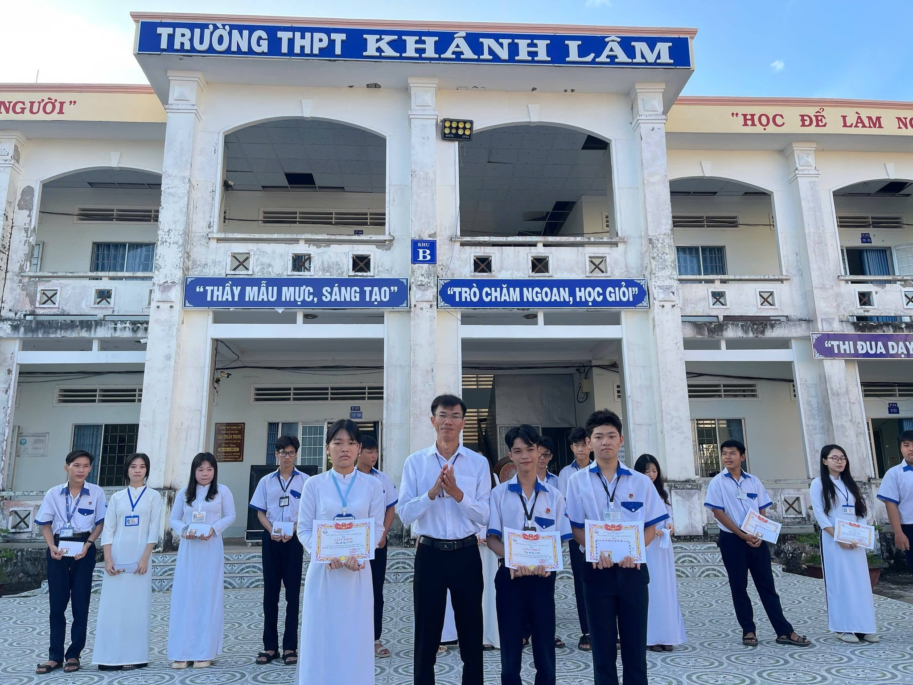
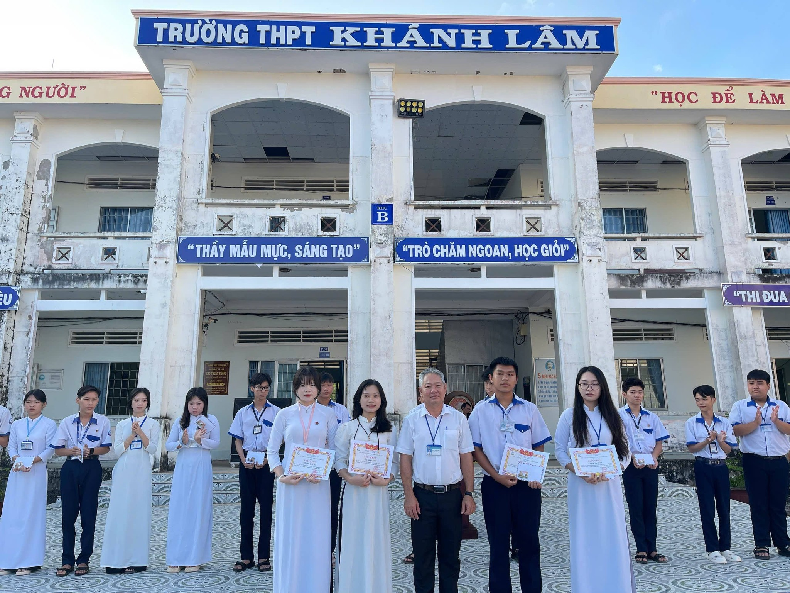
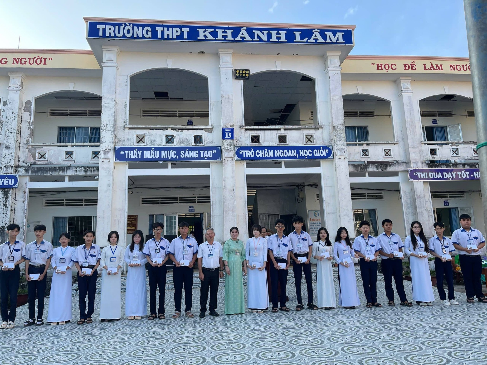

Trao cờ thi đua
Ban Giám hiệu trao cờ thi đua cho các tập thể lớp xuất sắc tuần 23.
Sáng thứ Hai, Trường THPT Khánh Lâm đã tổ chức buổi sinh hoạt dưới cờ tuần 24 với sự tham dự của Ban Giám hiệu nhà trường, các thầy cô giáo chủ nhiệm và toàn thể học sinh ba khối 10, 11, 12. Tại buổi sinh hoạt, nhà trường đã tiến hành tổng kết, đánh giá các hoạt động nổi bật trong tháng 02, ghi nhận hàng loạt "cơn mưa" thành tích rực rỡ từ thầy và trò:
- 🔬 Tổ chức thành công chuyên đề STEAM của Tổ Hóa – Sinh.
- 🏐 Giao lưu Bóng chuyền chào mừng Ngày hội Biên phòng toàn dân đoạt Giải Nhất.
- 🗣️ Tham gia cuộc thi Hùng biện Tiếng Anh lần thứ IV cấp tỉnh đoạt Giải Nhất.
- 📰 Tham gia Báo Xuân – Báo tường học đường đoạt Giải C cấp tỉnh.
- 📚 Tiếp tục duy trì hiệu quả và đẩy mạnh công tác ôn luyện Học sinh giỏi.
🏆 KẾT QUẢ THI ĐUA TUẦN 23 🏆
Khối 10
Ban Khoa học Tự nhiên
🥇 Hạng Nhất: Lớp 10T1
🥈 Hạng Nhì: Lớp 10T4
Ban Khoa học Xã hội
🥇 Hạng Nhất: Lớp 10X2
🥈 Hạng Nhì: Lớp 10X3
Khối 11 - 12
Ban Khoa học Tự nhiên
🥇 Hạng Nhất: Lớp 11T4
🥈 Hạng Nhì: Lớp 12T1
🥉 Hạng Ba: Lớp 11T2
Ban Khoa học Xã hội
🥇 Hạng Nhất: Lớp 11X5
🥈 Hạng Nhì: Lớp 12X3
🥉 Hạng Ba: Lớp 12X1
Bên cạnh đó, buổi sinh hoạt cũng triển khai quyết định khen thưởng các tập thể, cá nhân đoạt giải trong chuyên đề STEAM của Tổ Hóa – Sinh, góp phần khích lệ tinh thần sáng tạo, đam mê nghiên cứu khoa học trong học sinh.





Những gương mặt rạng rỡ của các bạn học sinh khi được vinh danh trên bục danh dự.
Thông qua buổi sinh hoạt dưới cờ, Ban Giám hiệu nhà trường tiếp tục nhấn mạnh việc giữ gìn nề nếp, kỷ cương học đường, phát huy phong trào thi đua "Dạy tốt – Học tốt" và định hướng các nhiệm vụ trọng tâm trong thời gian tới. Buổi sinh hoạt diễn ra vô cùng nghiêm túc, ý nghĩa, tạo động lực to lớn để thầy và trò toàn trường tiếp tục nỗ lực phấn đấu hoàn thành xuất sắc nhiệm vụ năm học 2025–2026.
🌟 🏫 🌟
-- THPT Khánh Lâm: Khát vọng vươn xa --